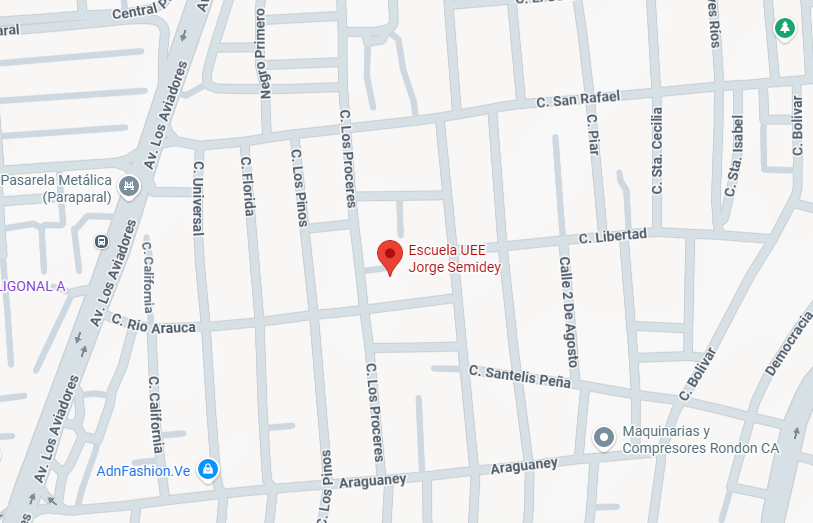
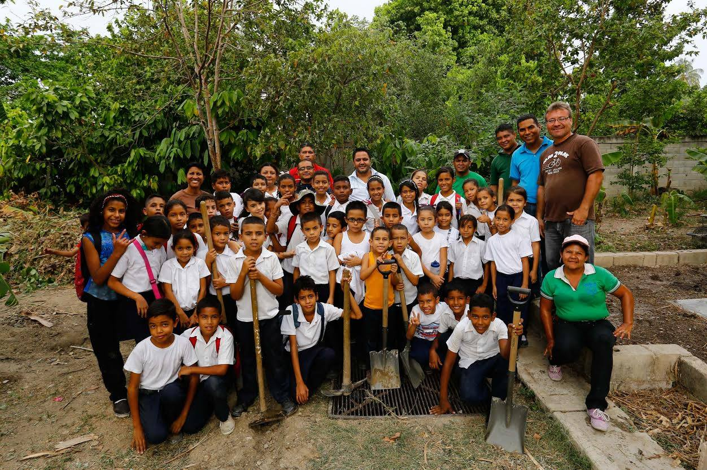

Reseña Histórica

En 1915, en la ciudad de San Cristóbal, estado Táchira, nace el destacado educador Jorge Semidey Illarramendi, figura clave dentro del desarrollo pedagógico venezolano y referente para generaciones de estudiantes y docentes. Su vocación por la enseñanza, su disciplina y su rigurosa ética profesional lo convirtieron en un referente nacional.
A partir de 1946, Semidey desempeñó un papel fundamental como director y profesor del reconocido Liceo Agustín Codazzi de Maracay. Paralelamente, impartió clases en diversas instituciones educativas, entre ellas el Colegio Nuestra Señora de la Consolación, el Colegio Valles de Aragua, la Escuela de Agricultura y la Escuela de Demostradoras del Hogar Campesino. Todas estas instituciones forman parte del tejido académico que ayudó a fortalecer la identidad cultural y educativa del estado Aragua.
Su legado trascendió las aulas, dejando un impacto humano, intelectual y profesional que aún permanece. En honor a su vida y obra, la U.E.E “Jorge Semidey” lleva con orgullo su nombre, para preservar su memoria y continuar su misión educativa basada en la ética, el compromiso social y la formación integral del ser humano.
Con el paso de los años, nuestra institución ha evolucionado en infraestructura, programas educativos y proyectos tecnológicos, adaptándose a las necesidades modernas de la comunidad estudiantil. Actualmente se destaca por su participación activa en proyectos de innovación, cultura, deporte, formación tecnológica y desarrollo social.
Ubicación
La Unidad Educativa Estatal "Jorge Semidey" se encuentra ubicada en el estado Aragua, una de las regiones centrales más importantes de Venezuela por su desarrollo industrial, comercial y educativo. La institución está en la ciudad de Maracay, específicamente municipio Francisco Linares Alcántara, en el sector francisco de miranda, calle los Proceres diagonal a la calle Rio Arauca
- Estado: Aragua
- Ciudad: Maracay
- Municipio: Franciosco Linares Alcántara
- Calle(s): Los Proceser con Rio Arauca
Misión
Formar estudiantes íntegros, críticos, creativos y comprometidos con su entorno, mediante una educación de calidad fundamentada en valores humanos, sociales y ciudadanos. La institución se orienta a brindar oportunidades equitativas de aprendizaje, promoviendo el pensamiento científico, el uso de las tecnologías y el desarrollo pleno de las capacidades individuales.
Visión
Ser una institución educativa modelo en valores, innovación tecnológica y excelencia académica, capaz de transformar positivamente a la comunidad y generar ciudadanos preparados para enfrentar los retos sociales, culturales y científicos del futuro. Aspiramos a consolidarnos como referente regional en proyectos educativos y formativos que impacten a largo plazo.
Valores Institucionales
- Respeto: Base de la convivencia armónica entre estudiantes, docentes y representantes.
- Responsabilidad: Cumplimiento de deberes académicos y sociales.
- Solidaridad: Apoyo mutuo como parte de la formación ciudadana.
- Disciplina: Organización y enfoque para lograr objetivos educativos.
- Honestidad: Valores éticos presentes en cada acción dentro y fuera del aula.
- Trabajo en equipo: Cooperación como vía para el aprendizaje significativo.
Participación Comunitaria
La U.E.E Jorge Semidey mantiene una sólida relación con su comunidad. Padres, representantes, docentes, líderes vecinales y organizaciones locales participan de manera activa en proyectos de cultura, deporte, tecnología, jornadas de mantenimiento, actividades especiales y programas de apoyo estudiantil.
Además, la institución fomenta programas de formación integral como:
- Proyectos ambientales y reciclaje
- Talleres de formación tecnológica (Canaima, informática básica, seguridad digital)
- Clubes de lectura y expresión artística
- Jornadas deportivas y recreativas
- Actividades sociocomunitarias